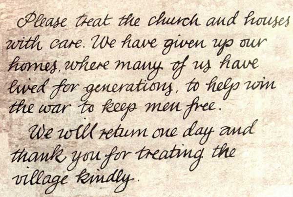
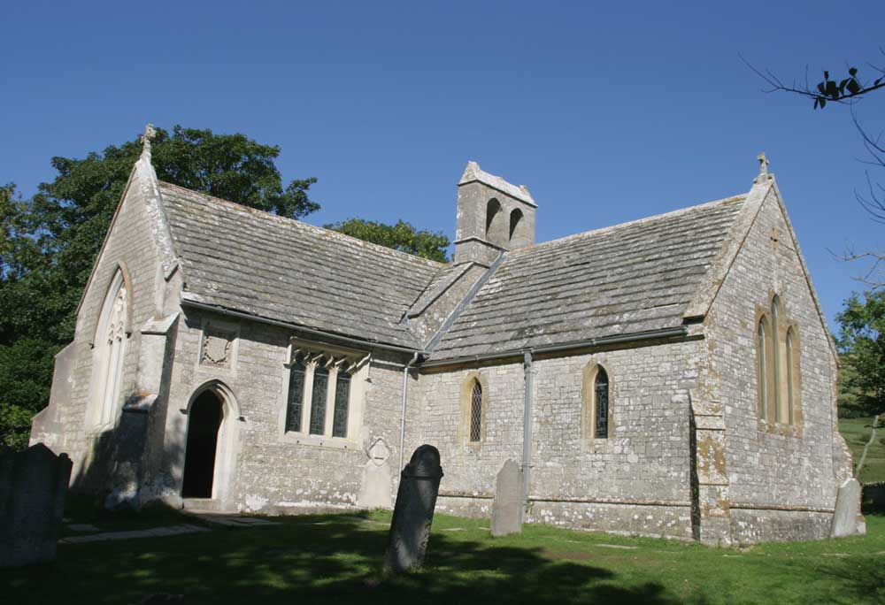

The Note on the Church Door
By James Langton · Updated May 2026

In December 1943, as the last families of Tyneham locked their doors and walked away from the village for what they believed would be the final time before Christmas, someone pinned a handwritten note to the door of St Mary's Church. Nobody recorded who wrote it. The note was signed by W.H. Bond, on behalf of the families of Tyneham village.
The note read:
"Please treat the church and houses with care; we have given up our homes where many of us lived for generations to help win the war to keep men free. We shall return one day and thank you for treating the village kindly."
In a few plain sentences it captured everything: the sacrifice made willingly, the trust placed in those who would follow, and the absolute certainty that they would come back. That last sentence — we shall return one day — has become the most poignant line in Tyneham's story, because they never did.
The Day They Left
The War Office had given the villagers just weeks to pack up lives that in many cases stretched back generations. Farming families had to find somewhere for their livestock. Elderly residents who had never lived anywhere else had to find lodgings in nearby towns. The Millers, the Minterns, the Taylors and the other families of Worbarrow Bay and the village lanes gathered what they could carry and left.
They departed on 19 December 1943 — just days before Christmas. The church bells that had rung for baptisms, weddings and funerals across the centuries were removed shortly afterwards and rehomed at Steeple church, a few miles away. The fine Jacobean pulpit went to Lulworth Camp. The village that had stood since the time of the Norman Conquest fell silent.
The Woman Who Pinned the Note
By tradition, the person who fixed the note to the church door was Helen Beatrice Taylor, the last villager to leave. Helen was born in 1901 in the Laundry Cottages — the only homes in Tyneham with running water — where her family ran the village laundry, washing for Tyneham House and the Rectory arriving by cart in wicker hampers every Monday morning. Her mother Emily lost all three of her sons — William, Arthur and Bert — in the First World War, and died in 1917 aged 52, worn out, as the village remembered it, with work, worry and grief. Helen, just sixteen, took over the laundry and ran it for the next twenty-six years, until the evacuation ended village life altogether.
Helen lived to 1998 — fifty-five years after she closed the door on her home. Like every villager, she was never able to return to live in Tyneham. The only way back, as visitors to the churchyard will notice from the handful of recent gravestones, was burial: former residents and their families retained the right to be laid to rest beside the church.
What the Note Means
The note has been reproduced in books, documentaries and newspaper articles ever since it was found. It resonates so deeply because it is so completely without bitterness. The villagers did not rail against the government or the Army. They asked only that their homes be treated with care, and they expressed their faith that the promise of return would be kept.
That faith was not rewarded. After the war ended the Army stayed, and after a public inquiry and years of campaigning, the government confirmed in 1974 that the land would remain under military control permanently. The note on the church door became a symbol not only of wartime sacrifice but of a promise broken — one chapter in the wider history of Tyneham village.
The Note Today

St Mary's Church has been carefully restored and now serves as a small museum. Inside, interpretive displays tell the story of the village and its people. A copy of the note is displayed there, as it has been for many years, so that every visitor can read the words that were written in such haste on that cold December day.
The original note itself — a modest piece of paper carrying one of the most quietly powerful statements of the Second World War home front — is preserved as part of the historical record of Tyneham village.